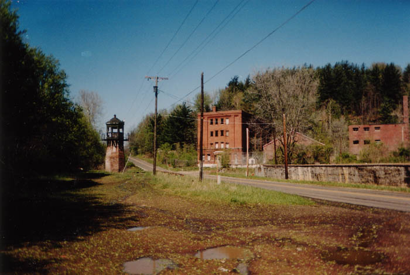
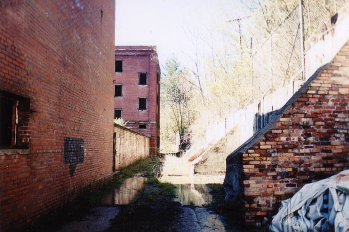

The prison at Roseville is one of two satellite prisons which once belonged to the Ohio Penitentiary in Columbus; the other is located near Junction City. The town of Roseville, like Junction City, is in Perry County, but Roseville's prison stands just across the county line, in Muskingum County. Good behavior inmates might be sent from Columbus to either of these reduced security pens to work the ovens and make bricks which were then used in state building projects.
One of the most interesting things about this prison is the existence of two brick houses about a hundred feet from the gate which must have been built for the warden or other prison officials. They're made from the same brick that the prison is built from, and feature a brick-paved driveway and garden wall.
Unlike the prison, these houses have been lived in recently; as you can tell in the photos above, they're carpeted and feature modern bathrooms and kitchens. When we were inside there was even a roll of toilet paper in the bathroom. Nobody lived there any of the times I visited the Roseville Prison, between spring 2001 and spring 2002, but a local I talked to said that people had only recently moved out.

The prison itself is in much worse condition. Today, the old Ohio Pen has been replaced by a hockey arena, while both of its satellites stand empty. The Roseville Prison has seen use as both a paintball arena and a Halloween haunted house attraction. It is also said to be home to a real ghost--a woman who jumps from the roof each night in a reenactment of her suicide.
Aside from the main prison building, there are three guard towers and three separate buildings on the grounds of the prison. The two rear buildings are high-ceilinged warehouse-type things with assorted junk strewn on the floor: books, toys, religious stuff.
The outbuilding closest to the main building is made of bigger bricks and puts you in mind of an elementary school. Inside are dozens of empty rooms and long hallways. One of the rooms features a row of theater-style folding chairs. Maybe this is where the good inmates watched movies.
Below you can see what remains of a prison shower. I'll spare you the dropped soap jokes.
From this building you can access the prison exercise yard. The outside wall, which is at least twenty feet high, was built into a hill and is topped with a barbed wire fence. A rickety but climbable guard tower is located nearby.

In the weed-choked yard out front is a faintly discernable baseball diamond. We didn't know what this was until we noticed the scoreboard on the wall. It really sort of gives you a sense of where you are, and that convicts really had what little fun they were allowed in this yard I so easily walk in and out of. I wonder what sort of visiting teams the cons played against.
I'm sure the sports kept them in shape--that and the constant hard work. It's a lot less painful to lose weight with a product like Medifast or something. Convicts who served their time here in the Roseville Prison are unlikely to have had internet access to get a Medifast coupon but perhaps they could have received one in the mail. The rules of the prison and U.S. Postal service allow prisoners, then and now, to receive letters, but that mail is searchable by authorized guards who have special permission to read it and assess any safety threats.

The only easy way to get into the main prison building is through this building, down a long and nasty hallway with wet streamers hanging from the ceiling--left over from the old haunted house. Most abandoned prisons and institutions I've been to have been surprisingly easy to break into, which makes me wonder how hard they could have been to get out of, but this one does feature quite a few locked and barred doors and windows.
At this point I have to warn anyone who is thinking of visiting the Roseville Prison about the biggest risk involved in a trip to the place.
I have explored the Roseville Prison on three separate occasions, and each time I have gotten sick. When I went in the spring of 2001 with my then-girlfriend and a friend, I had a sore throat and just felt all-around crappy for the rest of the night. The same thing happened when we returned a week later for better pictures. But it was much worse the following year, when I took a couple of friends to see the place; when I was in the main building I could tell that my throat was starting to feel sore, and it only got worse after we left. Eventually this turned into a full-blown miserable throat and sinus infection. Another one of the three of us got sick as well, even throwing up and missing work. We both ended up on antibiotics and were sick for days. (The third guy was already on amoxicillin for something else, so he didn't get sick.) It doesn't make much sense to me that this prison should be an infectious disease-carrying place; it's well-ventilated, with simple poured-concrete ceilings and no insulation at all, basically just a brick shell. One clue might be the fact that there are weird stalagmites and stalactites forming in the upper levels, which makes me think of that old Edgar Allen Poe story, "The Cask of Amontillado," where they talk about "mitre" and how bad it is for your lungs. It also could have been mold; check out this website from the Centers for Disease Control for more information about what mold spores can do to your body. No matter what, I'm pretty much objectively positive that it was this place that made everyone sick. So trespass at your own risk. Or just click below to see the photos I suffered so acutely to obtain.
ENTER
Back
Sources
Shipley, Tonya and Kathy Thompson. "Skeptic, Believer Visit Area's 'Haunted Places.'" Zanesville Times Recorder, 23 Oct. 2005.{kind=link}